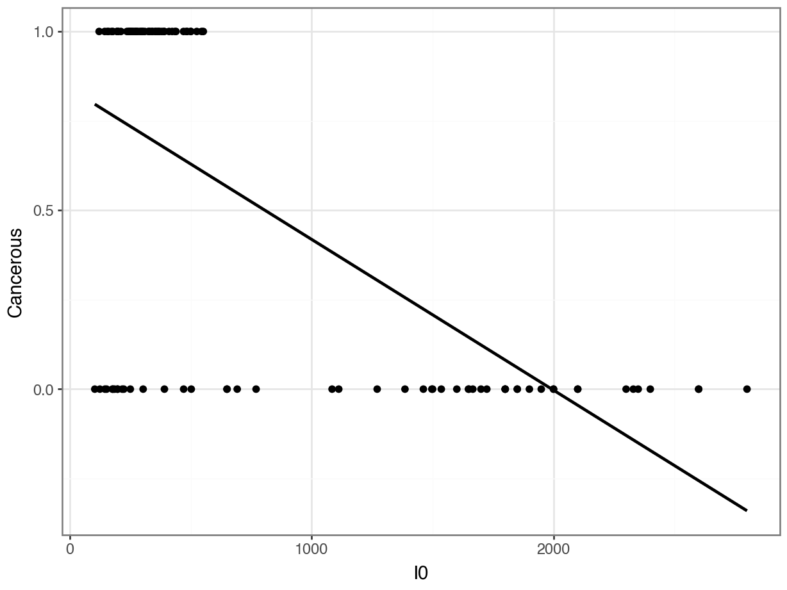

import pandas as pd
df = pd.read_csv("data/BreastTissue.csv")
cancer_levels = ["car", "fad", "mas"]
df['Cancerous'] = df['Class'].isin(cancer_levels)We can do KNN for Classification by letting the nearest neighbors “vote”.
The number of votes is a “probability”.
A classification model must be evaluated differently than a regression model.
One possible metric is accuracy, but this is a bad choice in situations with imbalanced data.
Precision measures “if we say it’s in Class A, is it really?”
Recall measures “if it’s really in Class A, did we find it?”
F1 Score is a balance of precision and recall.
Macro F1 Score averages the F1 scores of all classes.
In the last class a student (smartly) asked what would happen if there were ties.
By default, KNeighborsClassifier() uses weights = "uniform", which selects the first occurrence of the maximum value. Meaning, the group that comes first in .classes_ is selected.
You can change this to prioritizing the group with the smallest distances by using weights = "distance".
Electrical signals can be used to detect whether tissue is cancerous.
The goal is to determine whether a sample of breast tissue is:
Not Cancerous
Cancerous
Let’s read the data, and also make a new variable called “Cancerous”.
Case # Class I0 ... DR P Cancerous
0 1 car 524.794072 ... 220.737212 556.828334 True
1 2 car 330.000000 ... 99.084964 400.225776 True
2 3 car 551.879287 ... 253.785300 656.769449 True
3 4 car 380.000000 ... 105.198568 493.701814 True
4 5 car 362.831266 ... 103.866552 424.796503 True
[5 rows x 12 columns]You should NOT use ordinary regression for a classification problem!
This slide section is to show you why it does NOT work.
We know that in computers, True = 1 and False = 0. So, why not convert our response variable, Cancerous, to numbers and fit a regression?
Case # Class I0 ... DR P Cancerous
0 1 car 524.794072 ... 220.737212 556.828334 1
1 2 car 330.000000 ... 99.084964 400.225776 1
2 3 car 551.879287 ... 253.785300 656.769449 1
3 4 car 380.000000 ... 105.198568 493.701814 1
4 5 car 362.831266 ... 103.866552 424.796503 1
[5 rows x 12 columns]Problem 1: Did we get “reasonable” predictions?
Problem 2: How do we translate these predictions into categories???
array([ 0.74019045, 0.89022436, 0.82501565, 0.90210946, 0.82407215,
0.70880368, 0.73084215, 0.75641256, 0.81285854, 0.84265773,
1.05274916, 0.83203994, 0.82221736, 0.98879611, 0.84321428,
1.14439789, 0.87065951, 0.82357191, 0.88721004, 0.86017708,
0.75973787, 0.56958917, 0.50364921, 0.84044159, 0.66291026,
0.5291845 , 0.58770322, 0.58565156, 0.53944124, 0.54086431,
0.626959 , 0.60392716, 0.84459103, 0.65514535, 0.83767168,
0.73230038, 0.82568408, 0.75333313, 0.54012942, 0.54183212,
0.50716066, 0.70881584, 0.52734464, 0.66456375, 0.73629418,
0.85237593, 0.84451578, 0.62061155, 0.60509501, 0.47440789,
0.78797208, 0.74240828, 0.91841366, 0.71160435, 0.63338505,
0.7122256 , 0.82410488, 0.55742465, 0.62545421, 0.73912902,
0.73912902, 0.70136245, 0.78113432, 0.77907358, 0.51597274,
0.49247652, 0.65694204, 0.72574607, 0.76292245, 0.82501906,
0.04266066, 0.24283615, 0.30785716, 0.52977377, 0.12835422,
0.35012437, 0.39042852, 0.34447888, 0.10874534, 0.22844426,
0.35125209, 0.25457208, 0.12820727, 0.18275452, -0.06826015,
-0.02235371, 0.05662524, -0.02161184, 0.03275109, -0.03722977,
0.05434446, -0.11400134, 0.0985149 , -0.01465065, 0.05067868,
0.04211471, 0.05774736, -0.26666568, -0.13914904, -0.12585178,
-0.02264956, 0.06060737, 0.04839979, 0.12583274, -0.17299232,
-0.22474136])Problem 3: Was the relationship really linear???
Problem 4: Are the errors really random???
Problem 5: Are the errors normally distributed???
Idea: Instead of predicting 0 or 1, try to predict the probability of cancer.
Problem: We don’t observe probabilities before diagnosis; we only know if that person ended up with cancer or not.
Solution: (Fancy statistics and math.)
Why is it called Logistic Regression?
Because the “fancy math” uses a logistic function in it.
What you need to know:
It’s used for binary classification problems.
The predicted values are the “log-odds” of having cancer, i.e.
\[\text{log-odds} = \log \left(\frac{p}{1-p}\right)\]
We are more interested in the predicted probabilities.
As with KNN, we predict categories by choosing a threshold.
By default if \(p > 0.5\) -> we predict cancer
sklearnNo penalty
The "l2" penalty does ridge regression and is the default.
The "l1" penalty does lasso regression. Theelasticnet` penalty does lasso + ridge regression.
sklearnarray([1, 1, 1, 1, 1, 1, 1, 1, 1, 1, 1, 1, 1, 1, 1, 1, 1, 1, 1, 1, 1, 1,
1, 1, 1, 1, 1, 1, 1, 1, 1, 1, 1, 1, 1, 1, 1, 1, 1, 1, 0, 1, 0, 1,
1, 1, 1, 1, 1, 0, 1, 1, 1, 1, 1, 1, 1, 1, 1, 1, 1, 1, 1, 1, 0, 0,
1, 1, 1, 1, 0, 0, 0, 0, 0, 0, 0, 0, 0, 0, 0, 0, 0, 0, 0, 0, 0, 0,
0, 0, 0, 0, 0, 0, 0, 0, 0, 0, 0, 0, 0, 0, 0, 0, 0, 0]) 0 1
0 38 14
1 3 51Calculate the precision for predicting cancer.
Calculate the recall for predicting cancer.
Calculate the precision for predicting non-cancer.
Calculate the recall for predicting non-cancer.
What if we had used different cutoffs besides \(p > 0.5\)?
What we used \(p > 0.7\)?
What we used \(p > 0.7\)?
0 1
0 41 11
1 18 36What we used \(p > 0.2\)?
array([ True, True, True, True, True, True, True, True, True]) 0 1
0 33 19
1 0 54Suppose you want to predict Cancer vs. No Cancer from breast tissue using a Logistic Regression. Should you use…
Just I0 and PA500?
Just DA and P?
I0, PA500, DA, and P?
or all predictors?
Use cross-validation (cross_val_score()) with 10 folds using the F1 Score (scoring = "f1_macro") to decide!
Then, fit your final model and report the confusion matrix.
“For every unit of I0 higher, we predict 0.003 lower log-odds of cancer.”
“For every unit of PA500 higher, we predict 11.73 higher log-odds of cancer.”
PA500 is more important than I0?Does this mean that PA500 is more important than I0?
Not necessarily. They have different units and so the coefficients mean different things.
“For every 1000 units of I0 higher, we predict 3.0 lower log-odds of cancer”
“For every 0.1 unit of PA500 higher, we predict 1.1 higher log-odds of cancer.”
What if we had standardized I0 and PA500?
Coefficients Column
0 -2.309090 I0
1 0.801477 PA500 Coefficients Column
0 -2.309090 I0
1 0.801477 PA500I0 is, we predict 2.3 lower log-odds of cancer”PA500 is, we predict 0.80 higher log-odds of cancer.”But - does this approach change our predictions?
without_stdize with_stdize
0 0.736188 0.736226
1 0.889803 0.889822
2 0.813277 0.813319
3 0.890781 0.890804
4 0.842957 0.842978
5 0.731660 0.731678
6 0.775454 0.775463
7 0.802116 0.802126
8 0.816982 0.817014
9 0.847675 0.847702Standardizing will not change the predictions for Linear or Logistic Regression!
Advantage of not standardizing: More interpretable coefficients
Advantage of standardizing: Compare relative importance of predictors
It’s up to you!
For your Logistic Regression using all predictors, which variable was the most important?
How would you interpret the coefficient?
To fit a regression model (i.e., coefficients times predictors) to a categorical response, we use logistic regression.
Coefficients are interpreted as “One unit increase in predictor is associated with a [something] increase in the log-odds of Category 1.”
We still use cross-validated metrics to decide between KNN and Logistic regression, and between different feature sets.
We still report confusion matrices and sometimes precision-recall curves of our final model.